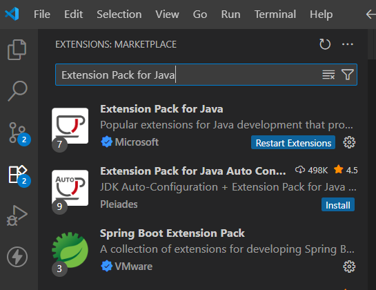

在 VSCode 中配置 Java 开发环境
1. 安装 VSCode
前往 Visual Studio Code 官网 下载并安装最新版 VSCode。
2. 安装 Java JDK
请先完成 JDK 的安装和环境变量配置（参考上一节"Java环境配置"）。
3. 推荐扩展与安装
- Extension Pack for Java（由 Microsoft 提供，包含 Language Support、Debugger、Maven/Gradle 支持等）
- Java Test Runner（运行和调试 JUnit/Tests）
- Maven for Java 或 Gradle for Java（根据项目构建工具选择）
- Debugger for Java（通常与扩展包一并安装）
- Lombok Annotations Support（如果项目使用 Lombok）
在 VSCode 扩展面板搜索扩展名并安装，或使用命令面板：Extensions: Install Extensions。

4. 配置 VSCode（关键设置）
建议在工作区级别（.vscode/settings.json）配置：
{
"java.configuration.runtimes": [
{
"name": "JavaSE-17",
"path": "D:/Java/jdk-17"
}
],
"java.home": "D:/Java/jdk-21"
}说明：java.configuration.runtimes 用于指定多个 JDK 供不同项目选择，java.home 用于覆盖 VSCode 默认的 JDK 发现（仅在特殊场景使用）。
5. 创建、运行与调试 Java 项目
- 打开命令面板（
Ctrl+Shift+P），运行Java: Create Java Project，选择项目模板（No Build Tools / Maven / Gradle）。 - 导入现有项目：打开项目文件夹，VSCode 会提示导入 Maven/Gradle 项目并构建工作区。
- 在 Java 文件右上角点击"Run"可运行单个类；要调试，点击"Debug"或在左侧 Debug 面板添加断点后启动调试。
- 使用
launch.json自定义启动配置（位于.vscode/launch.json）：
{
"version": "0.2.0",
"configurations": [
{
"type": "java",
"name": "Debug (Launch) - Main",
"request": "launch",
"mainClass": "com.example.Main",
"projectName": "my-project"
}
]
}6. 常见问题与排查
- 找不到 JDK / 提示
No Java runtime present：检查JAVA_HOME、Path，并在 VSCode 设置中确认java.home未错误覆盖。 - 扩展未生效或语言服务未启动：尝试重载窗口（
Ctrl+Shift+P→Developer: Reload Window）并查看输出面板Java Language Server的日志。 - Lombok 注解报错但编译正常：安装
Lombok Annotations Support扩展并在项目中配置 Lombok 依赖。 - 单元测试无法运行：确保已安装
Java Test Runner，并在 Maven/Gradle 中添加测试依赖（JUnit）。 - 依赖下载慢：配置 Maven/Gradle 镜像（如阿里云仓库），或配置代理。
7. 调试技巧
- 使用断点、条件断点与日志点（Logpoint）来快速定位问题。
- 在 Debug 控制台查看异常堆栈、变量值与表达式求值。
- 结合单元测试和断点，先写测试再调试（TDD 思路）。
8. 工作流建议
- 对于小练习可使用
No Build Tools模板直接运行单文件；对真实项目建议使用 Maven 或 Gradle 管理依赖与构建。 - 在团队项目中使用
.vscode/settings.json保存团队一致的设置（例如编码、java.home指向共享 JDK）。
常见问题
- 如果提示找不到 JDK，请检查 JDK 是否安装并配置了环境变量。
- 电脑安装的JDK必须大于或等于Java17。
- 使用Zip安装java，不要使用安装程序来安装（可能出现未知问题）。
参考资料：